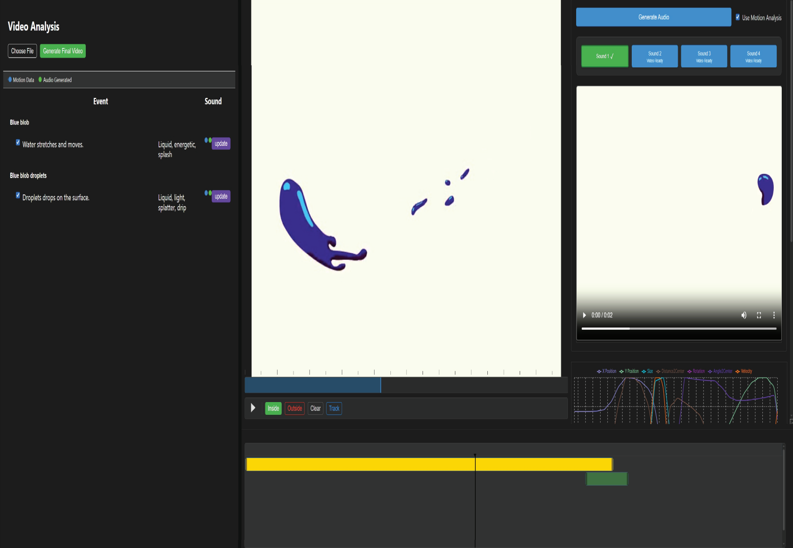

|
Jialin Huang 黄佳琳 I am a fifth-year PhD student in Computer Science at George Mason University, advised by Prof. Yotam Gingold. My research sits at the intersection of computer graphics and HCI, with an emphasis on accessible multimodal creative tools—systems that turn messy human input (hand motion, sketches, speech, and video) into controllable 3D content and sound. I am especially interested in non-visual interaction for Blind and Visually Impaired (BVI) users: how to make geometry perceivable through sound, and how to make creative workflows more learnable for non-experts. Recent projects include ShapeSonic (sonifying fingertip interactions for virtual shape perception) and MoSound (generative sound design for motion graphics). Before GMU, I earned a B.S. in Applied Mathematics from the University of Science and Technology of China (USTC). I previously interned at Adobe Research (2024) with Rubaiat Habib Kazi, collaborating with Prem Seetharaman, Timothy Richard Langlois, and Li-Yi Wei. CV / Google Scholar / Github |

|
Publications |
|

|
MoSound: An Interactive Tool for Generative Sound Design in Motion Graphics
Jialin Huang, Prem Seetharaman, Timothy Richard Langlois, Li-Yi Wei, Rubaiat Habib Kazi, Yotam Gingold CHI, 2026 paper / project page MoSound is an interactive system for adding sound effects to motion graphics videos. It detects key visual events, suggests short sound descriptions, and lets users map motion features (e.g., position and velocity) to audio properties (e.g., stereo panning and volume) to guide generative sound synthesis. |

|
ShapeSonic: Sonifying Fingertip Interactions for Non-Visual Virtual Shape Perception
Jialin Huang, Rana Hanocka, Alexa Siu, Yotam Gingold SIGGRAPH Asia, 2023 paper / project page ShapeSonic is a system designed to convey vivid 3D shape perception using purely audio feedback or sonification. ShapeSonic tracks users' fingertips in 3D and provides real-time sound feedback, based on a mass-produced, commodity hardware platform (Oculus Quest). In a study with 15 sighted and 6 BVI users, we demonstrate the value of ShapeSonic in shape landmark localization and recognition. |
|
Website template from Jon Barron. |